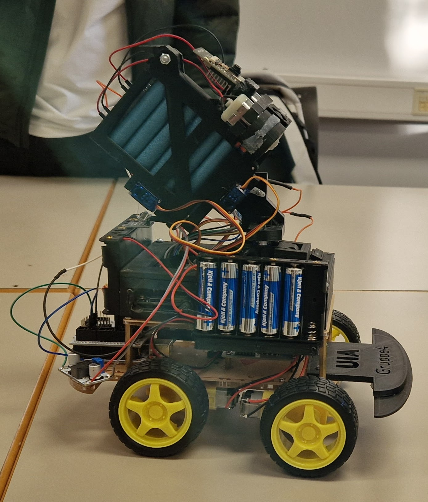

A computer-vision-guided Nerf turret, mounted on a motorized vehicle, that detects drones and automatically fires on them.
Built as a group project for IS-313 Internet of Things, a course whose assignment was simply to build something with a positive impact on society. After digging through Arduino's project gallery for inspiration, we landed on an automatic Nerf turret that uses machine learning and computer vision to detect and neutralize drones. NERF darts stand in as a proof-of-concept payload, showing that the system can reliably detect and hit a target.
The idea was born in the autumn of 2024, when the course ran, watching small drones become a decisive weapon on the battlefield in Ukraine. We wanted to build something that could help civilians defend against similar threats before they cause damage to people or infrastructure, so we mounted the turret on a motorized vehicle chassis to extend its patrol range beyond a single fixed position.

The finished turret-on-wheels prototype (UiA Gruppe 4).
Computer vision runs continuously against the live camera feed to spot drones the moment they appear.
Once a drone is detected, the turret aims and fires without an operator in the loop.
Operators can watch the camera feed and system status from a distance.
With no drone in view, the turret sweeps a search pattern instead of sitting still.
The chassis can be manually driven to reposition the turret and extend patrol range.
Trained specifically to recognize drones, rather than a generic object set.
One board drives the turret and camera, the other drives the vehicle it rides on.
Turret mount and vehicle parts printed in-house for the prototype.